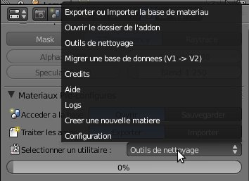
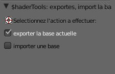
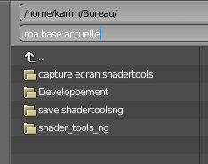
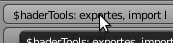
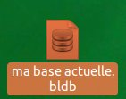
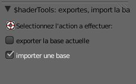

| Exporter ou Importer la base de materiaux : |
| Ce module vous permet d'exporter ou d'importer une base de matériaux en toute sécurité. |
| Cliquez sur la liste des 'Utilitaires' de l'interface du ShaderTools puis 'Exporter ou Importer la base de materiaux' pour accéder à ce module : |
|  |
| Commençons par exporter la base de matériaux. Pour cela cochez la case dans le panneau d'options à gauche de votre écran comme indiqué ci-dessous : |
|  |
| Puis il vous suffira de choisir un emplacement et de donner un nom à la base exportée comme indiquer ici : |
|  |
| Enfin il vous suffira de valider le bouton en haut à droite de votre écran pour exporter votre base : |
|  |
| Vous retrouverez votre base à l'emplacement renseigner précédemment comme dans l'exemple ci-dessous : |
|  |
| Maintenant pour l'importation, il vous suffit de cocher l'option importer dans le panneau d'options lorsque vous ouvrez le module par le biais de 'Utilitaires' puis 'Exporter ou Importer la base de materiaux' : |
|  |
| Puis sélectionnez la base qui doit remplacer celle que vous utilisez actuellement et validez soit en double-cliquant soit en utilisant le bouton de validation en haut à droite de votre écran : |
| BON A SAVOIR : A chaque importation votre ancienne base est copiée dans le répertoire 'save' du ShaderTools. Ce qui vous permettra en cas de mauvaise manipulation de pouvoir la récupérer et de la réutiliser sans soucis. |